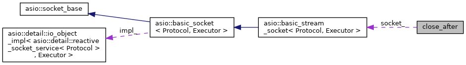

R-Type
Public Member Functions
|
Public Attributes
|
List of all members
close_after Struct Reference
Collaboration diagram for close_after:

[
legend
]
Public Member Functions
close_after
(std::chrono::steady_clock::duration t,
tcp_socket
&
s
)
Public Attributes
std::chrono::steady_clock::duration
timeout_
tcp_socket
&
socket_
The documentation for this struct was generated from the following file:
3rd_party_lib/asio/asio/src/examples/cpp11/timeouts/blocking_token_tcp_client.cpp
Generated by
1.9.1